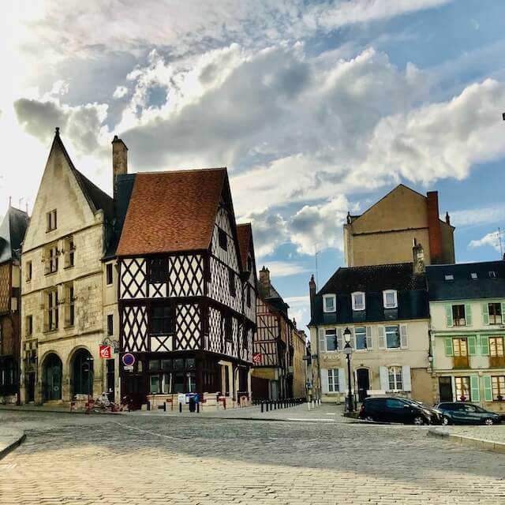

Ici, c'est moi à l'age de 4 mois, dans les bras de ma maman.
Visite du chateau de Busset (Allier)
Je m’appelle Sophie et je suis la créatrice des Mystères de Bourges.
Je suis originaire de Bourges, ville dans laquelle j’ai grandi. Après des études d’Arts Plastiques et d’Histoire de l’Art, j’ai occupé pendant plusieurs années un poste dans le domaine de la publicité et du marketing.
Pour la petite histoire, mon intérêt pour le tourisme et le patrimoine m’a été transmis par mes parents.
Petite, avec mon frère, ils nous ont fait arpenter chaque dimanche tous les châteaux des environs. En voiture ma maman, guide vert à la main, nous posait toujours des questions : « Quel est le nom des habitants de Montrichard ? », « La spécialité de la ville de Cholet ? ».
Ce goût pour les devinettes et les énigmes vient certainement de là.
Amoureuse de ma ville, j’aime ses quartiers tous plus beaux les uns que les autres dans lesquels je prends toujours plaisir à me balader. J'aime ses rues et ses maisons à colombages, ses parcs et ses monuments, ses places et ses coins calmes. J’aime ses vues incroyables qui me font toujours autant fondre. Ses spécialités gastronomiques dont je ne pourrais plus me passer. Son caractère paisible de petite ville de province, ses lieux emblématiques qui font sa renommée. J’aime aussi ma ville pour sa douceur de vivre, l’ambiance de son festival de musique en avril.
Plusieurs années désormais que mon cœur bat pour ma ville de Bourges. J’aime toujours en apprendre plus sur ce que tu nous caches sous tes rues pavées … toutes ces anecdotes que tu gardes secrètes.
Même quand on croit tout connaître sa ville, il existe toujours des recoins cachés ou secrets.
Comment partager cette passion et partager ma « carte postale souvenir » de Bourges ? Comment partager mes petits secrets ?
C’est ainsi que sont nés Les Mystères de Bourges. Avec beaucoup d’imagination et de plaisir …